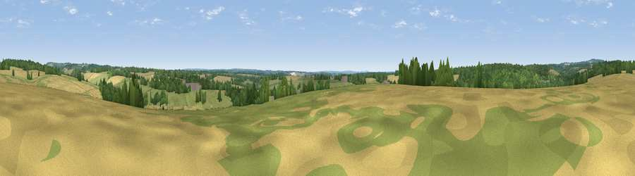

Viewpoint near Whitchurch
#35661 in England · top 44% of its area beats it · near Whitchurch · access?Where it is
The exact computed spot (SU 46767 51729). Click the marker for map links.
Public access: no public right of way or access land is recorded at this exact spot — it may be on private land. Computed from Natural England's CRoW access layer and OpenStreetMap rights of way — not the legal definitive map. Always verify locally.
The view, rendered

A 360° render of this exact spot computed from the terrain model, tree cover and land cover — summer colours, afternoon light, calibrated against photographs of famous viewpoints. Real trees, hedges and buildings will differ in detail.
The panorama
Grey silhouette: terrain skyline in each direction (720 bearings, Earth curvature and refraction included). Dashed green: skyline with trees (+15 m) and buildings (+8 m) as obstacles. Blue strip: how far the ground is visible on each bearing.
Where the view opens
Wedge length = distance to the farthest visible ground on that bearing (vegetation-aware). Rings at 10, 25 and 50 km.
What fills the view
40% cropland · 30% grassland · 29% woodland ·
Angular shares of the visible panorama (visual magnitude), not map area. Landscape diversity 0.49 (0–1 Shannon).
Key numbers
More beautiful places nearby
The staircase of upgrades: each row has a higher view potential than everything closer. Driving times are estimates from straight-line distance, calibrated against real road routing — check an actual route before setting out.
| Place | Direction | Drive | Score |
|---|---|---|---|
| Viewpoint near Old Burghclere | N · 3 km | ~7 min | 40.2 |
| Knowle Clump | SSE · 5 km | ~11 min | 41.7 |
| Viewpoint near Old Burghclere | NNW · 5 km | ~11 min | 56.7 |
| Ladle Hill | NNE · 5 km | ~11 min | 70.5 |
| Beacon Hill | N · 6 km | ~12 min | 76.7 |
| Martinsell viewpoint | WNW · 31 km | ~49 min | 76.9 |
| Viewpoint near Buriton | SE · 40 km | ~60 min | 80.0 |
| Beacon Hill | SE · 48 km | ~68 min | 85.8 |
51.26281, -1.33113 · source: osm peak · position refined by local search. Computed location — check access rights before visiting.